Ch7 Instability
이번 단원에서부터는, 조금 복잡하고
어려운 개념에 대해서 배워보자.
Instability
불안정성
이다.
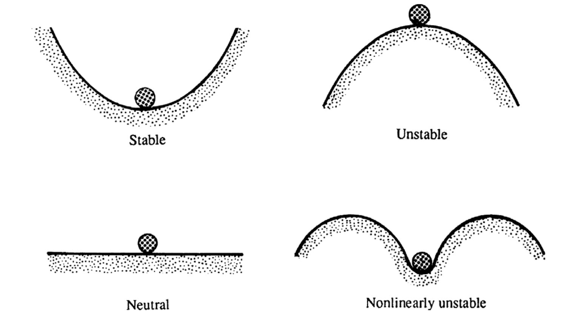
stable and unstable systems
위그림에서, stable한 공은 어떠한 아주 작은 힘을 가해주어도,
원래 위치를 그대로 지킨다.
하지만 unstable한 경우 아주아주 아주 작은 힘을 가해버리면,
순간 위치를 벗어나 버린다.
이에,
공학자들은
regular 한 즉 예측 가능한 motion(stable)
에서 예측 할 수 없는,
brownian random motion(unstable)
을 구분하고자 하였고,
정확히 두 개념의 boundary는 어떻게 되는지,
interchange는 언제 하는지에 대해서 알아보자.
[Method of Normal Modes]
먼저 perturbation(방해)의 효과를 해석하기 위해서,
다음의 두가지 가정을 해주자.

이제 perturbation의 식을 세워기 전에,
기본적인 상황을 가정해보자.
기본적으로 x방향으로 유체가 흐르고 있다고 가정해보자.
그리고 Basic state의 속도장은 z에 따라 변한다고 가정하자.

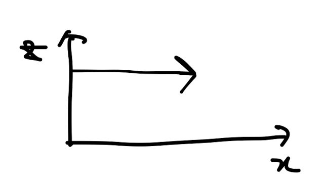
Basic flow.
perturbation velocity : u는
진폭: u_hat(z)+
x,y,t 방향 각각의 파동수에 맞게
fluctuate 하는 형태일 것이다.
(Sinousal 가정)

여기서 x,y방향 파동수를 벡터로 바꾸어 주자.
그리고 그 백터의 단위벡터 ek도 정의해 주자.

위의 정의를 바탕으로,
c: complex phase speed
σ: temporal growh or decay rate
둘 사이의 관계식을 다음과 같이 정의 할 수 있다.

즉, c: Complex phase speed는
허수와 실수를 포함하고 있는 complex number이고,
실수 부분은 진짜 파동의 속도,
허수 부분은 decay or growth 속도를 나타낸다.
그리고 허수부분이 바로 sigma의 physical meaning과 일치하므로,
식을 위와 같이 세울 수 있다.
(c = c_r + i c_i 전개하면 c_i = |k|
σ
)
새로운 정의를 추가하여,
최종적으로 다음과 같이 정의할 수 있다.

perturbation definition.
여기서 잘 살펴보면,
k,m에 허수부분이 존재한다면,
x,y가
- ∞, + ∞ 일때 u가 발산함을 알 수 있다.
따라서, k,m는 실수.
더하여, perturbation이 시간에 따라서, 급수적으로 커지지 않고
감소하는 (stable)형태이러면 c_i <0 이어야 함을 알 수 있다.

여기까지, perturbation을 몇가지 가정을 통해서,
stable, unstable 조건에 대해서 따져 보았다.
[Kelvin-Helmholtz Instability]
속도가 다른 두 유체가 나란히 흐르고,
그 사이에 interface가 존재하는 상황에서
instability
- Kelvin-Helmholtz Instability-
에 대해서 알아보자.

Kelvin-Helmholtz Instability situation
오른쪽 그림을 보면,
진행 과정에 따라서 instability가 커짐을 확인 할 수 있다.
여기서 유체1,2 각각의 veloctity potential 을 다음과 같이 정의 할 수 있고,
laplacian of potential = 0 임을 이용하여,
laplacian of
perturbation = 0 임을 증명가능하다.
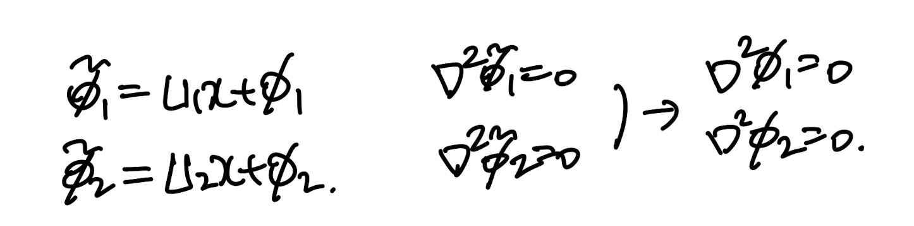
definition of velocity potential
여기서 boundary condition을 짚고 넘어가자.
일단 위아래 free stream 에서 perturbation = 0 일 것이므로,
-> (a)
interface Control volume
에서 들어오고 나가는 유체의 flux가 같으므로 -> (b)
interface에서 압력은 같으므로 -> (c)

아주 중요한. Boundary condition
ch2에서 배운 대로,
interface function을 다음과 같이 정의 할 수 있고,
그에 따라, normal vector를 설정 할 수 있다.

위의 interface 개념과,
밑의 아까 정의한 velocity potential(밑식)을
boundary condition(BC) (b)에 대입해 주자
definition of velocity potential
대입후 정리해주면,

여기서, linearization,
그리고 차수가 높은 항을 제거해주면,
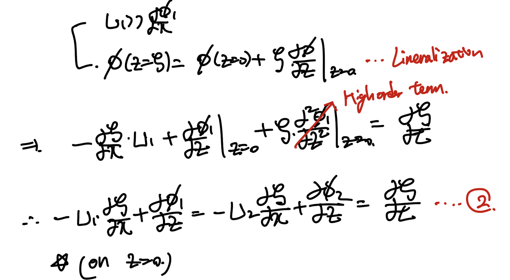
BC (b) 로 유도한 식.(추후에 쓰임)
한편, unsteady bernoulli eq으로
interface 근처 velocity potential을
다음과 같이 식을 세울 수 있다.
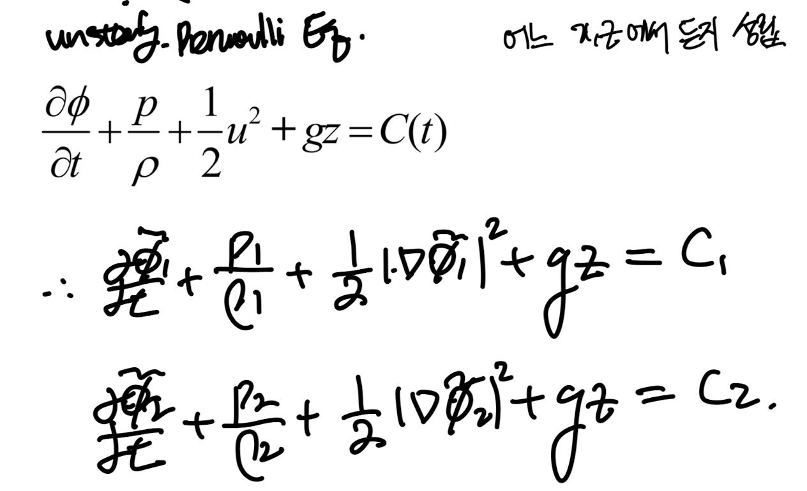
여기서 BC (c)에 따라서 P1 = P2이므로,

한편, P = P_undistub(interace에서 먼 곳) 임을 이용하기 위해서,
undistibuted state의 압력을 각각 식 3에서 도출한다.
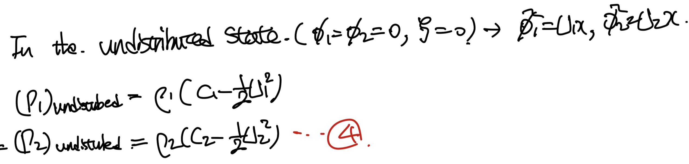
여기서, -1 * 3식 = -1 4식 으로 전개후 소거해주면

이에 velocity potential 정의를 대입해주자.
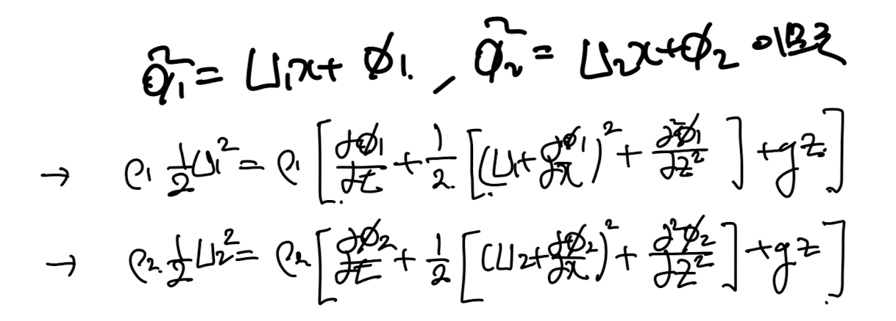
고차항을 제거해주자, 그리고 interface에서를 분석하기 위해 f = 0 -> z =
ζ
.

추후에 쓰일.5번식.
지금까지 BC을 이용해서 두가지 식을 증명하였다.
이제 맨처음에 배운
Method of normal modes
를 사용하여
perturbation을 정의하자.
위의 상황은 y방향은 존재하지 않고, xz방향의 2Dcase 이므로
다음과 같이 정의가능하다.

위에 정의한 것을
Laplacian of velocity potential of perturbation = 0
식에 대입한다.
definition of velocity potential
정리해주면, 아주 간단한 2차 linear ODE가 나온다.
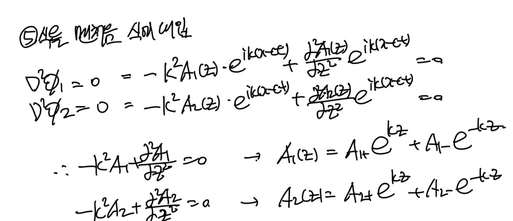
여기에 이제 BC (a)를 대입해주자

bc (a) 적용.
이렇게 구한 상수항을 6번에 대입해주자.
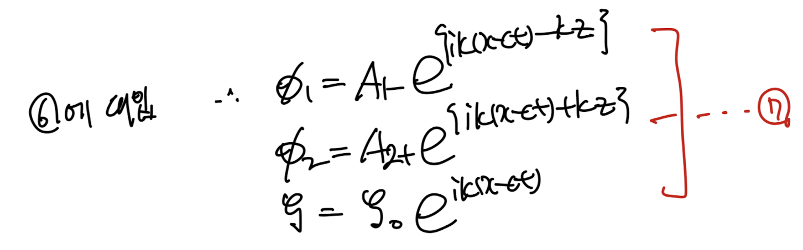
자 우리는 velocity potential of perturbation을
지금, method of normal modes로
파동의 함수 형태(7번식)으로 정의하였다.

이제 지금까지 BC으로 위 두식들에
대입해주자.
먼저 2번식에 대입


이제 5번식에 대입해주자.

이후 상수항을 제거해 주기위해 8번식을 9번식에 대입해주자.

c에 관한 2차 방정식이므로, 정리해주고 근의 공식을 사용하자.
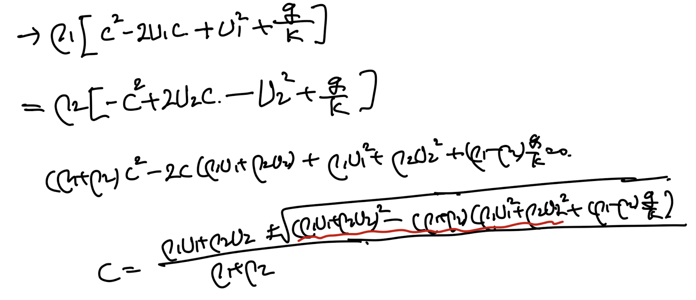
정리를 위해 빨간색 항을 전개해주면,
다음과 같이 c를 정리할 수 있다.
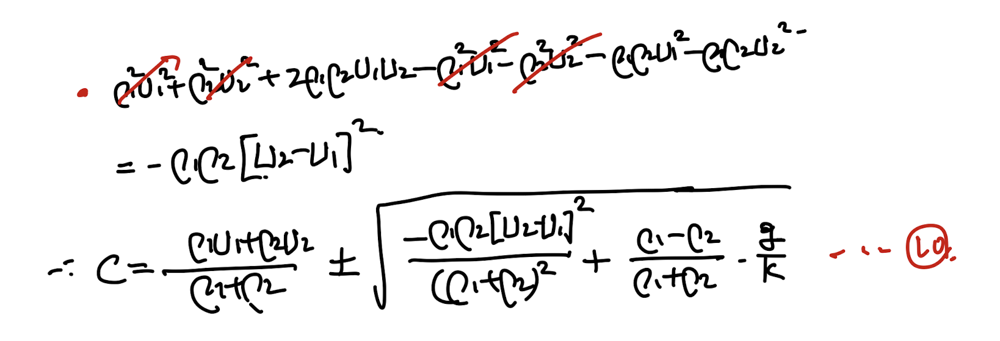
최종 c: complex phase speed(real part: 실제 파동속도, imaginary part: decay or growth rate)
맨 처음에 우리는 c_i가 양수이면, unstable함을 증명하였다.
따라서 루트 안이 음수이면, unstable하다.

이는 지금 밑의 상황에서,
두 유체의 속도차이가 크고,
밀도 차이가 작고
k가 클때
unstable가능성이 큼을 알 수 있다.
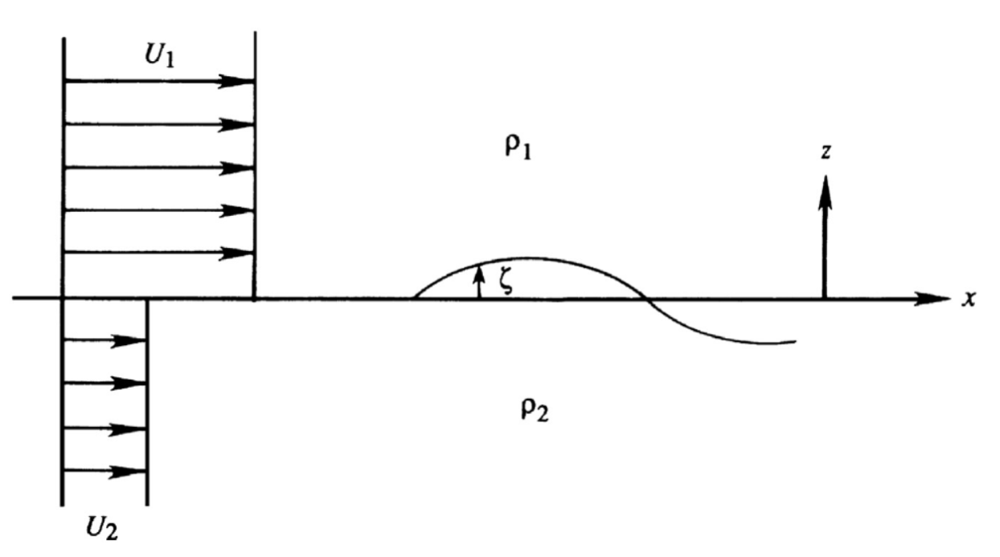
이번에는 두 유체가 모두 정지해있다고 가정해보자.
이때, c는 다음과 같이 정리된다.

여기서 만약에 2(위)의 유체 밀도가 더 크다면?
instable함을 알 수 있다.
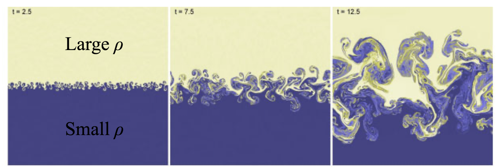
Rayleigh-Taylor Instability
U1 != = U2인 상황에서는?
재밌는 것은 U2-U1이 다른 상황에서
우리는 k가 만약에 충분히 크다면 10번식
루트 안의 항을 음수로 만들 수 있다.
최종 c: complex phase speed(real part: 실제 파동속도, imaginary part: decay or growth rate)
정리해보면,
어떠한 maxium k
에서 unstable한 상황이
될 수 밖에 없다는 것이다.
이는 또 재밌는 사실을 시사 하는데,
실제 instabiltiy 실험을 한결과
(밑의 유체와 위의 유체 속도 방향이 반대)
모두 같은 wave number로 보이는 것을 알 수 있다.

불안정한 k의 수가 굉장히 많지만,
그 중에서 growth rate가 가장 큰 k의
e^( |k| c_i t)
가 기하급수적으로 다른 작은 k에 비해 크므로,
해당 wave number만 실제 나타나는 것 처럼 보인다.
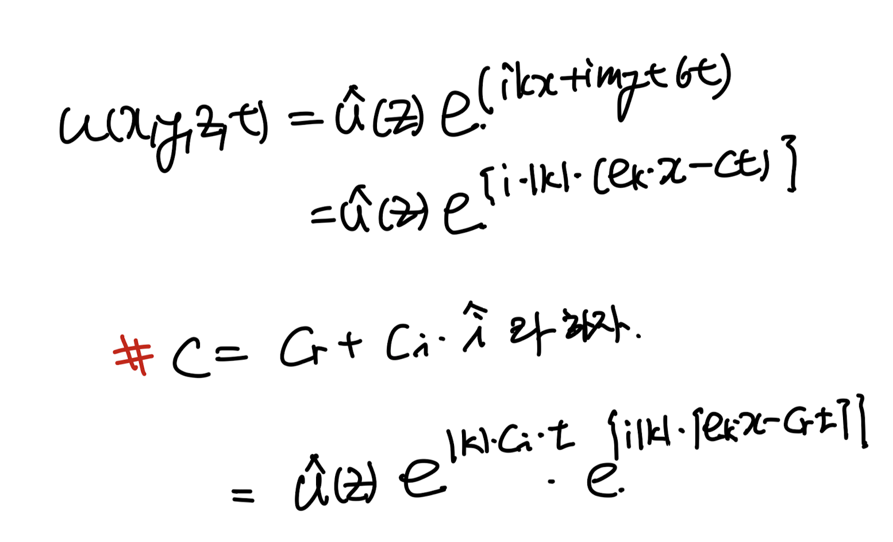
perturbation velocity when the flow is unstable.
마지막으로 밀도가 같은 상황에서는,
속도가 다르다면,
어느 wave number에서든 unstable함을 알 수 있다.